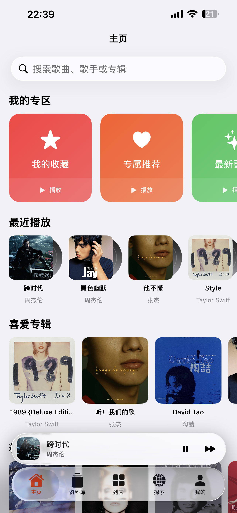
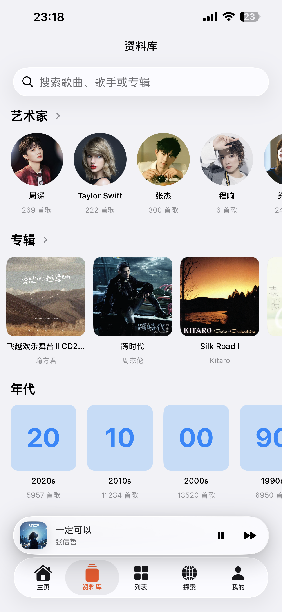
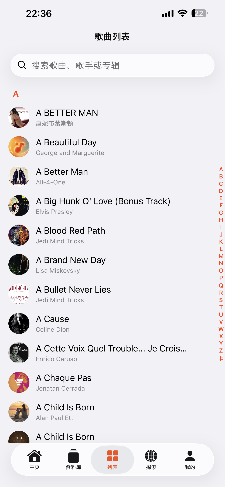
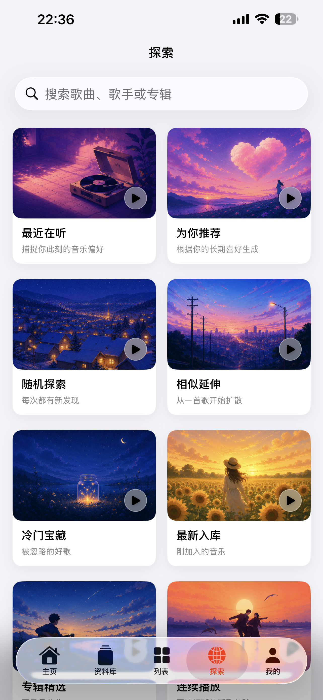
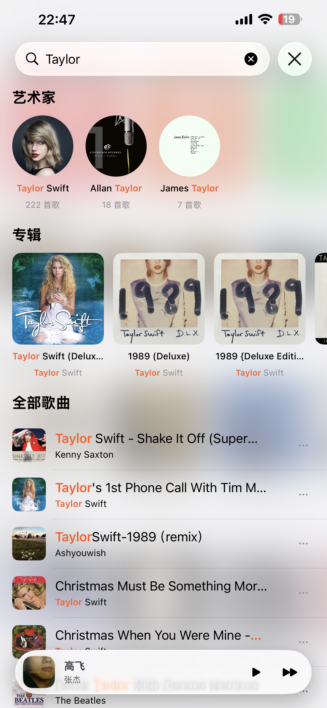
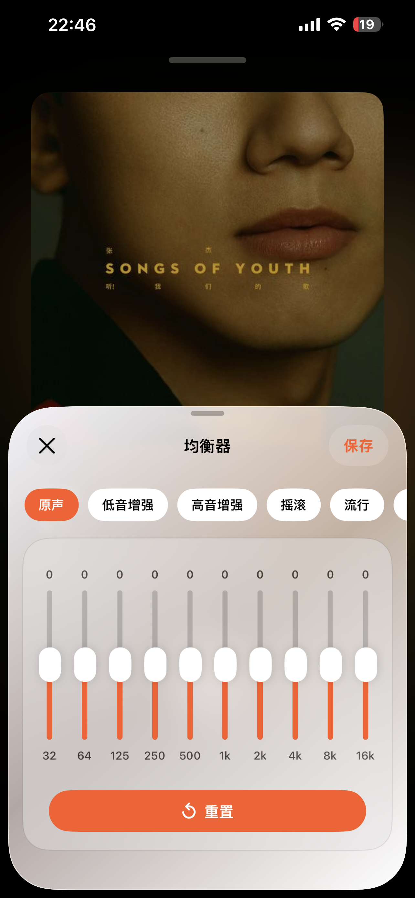
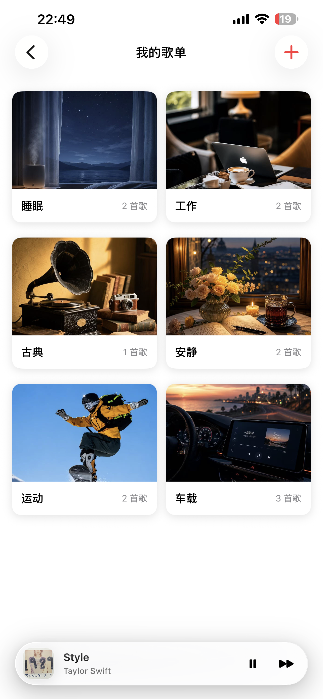
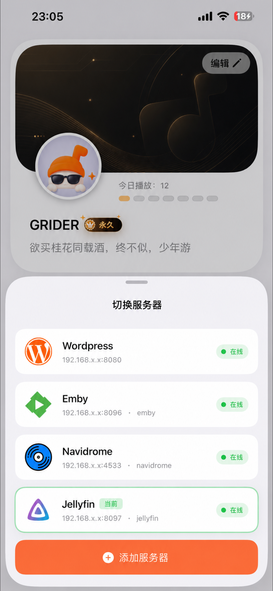

统一你的音乐来源
聚合本地导入、WebDAV，以及 Emby、Jellyfin、Navidrome、Subsonic、WordPress 等服务器音乐源。
GridPlayer 不是流媒体平台，而是为你手中真实的音乐收藏打造的现代播放器。
聚合本地导入、WebDAV，以及 Emby、Jellyfin、Navidrome、Subsonic、WordPress 等服务器音乐源。
支持 MP3、M4A、WAV、FLAC、AAC 等常见音频格式，让本地收藏和服务器音乐顺畅播放。
自动识别重复歌曲，优先展示音质更高、信息更完整的版本，并支持整理艺术家、专辑和歌单。
本地音乐与 WebDAV 支持解析歌曲名、艺术家、专辑、封面和歌词，文件列表变成完整资料库。
收藏、歌单、播放历史等数据会尽可能在不同音乐源之间关联，切换服务器也能保持连续。
通过 iCloud 同步收藏、歌单等个人数据，让多台设备上的音乐管理体验保持一致。
根据音乐时间信息归类不同年代，并结合收藏和播放记录生成个性化推荐内容。
远程音乐可缓存播放，减少网络波动影响，适合通勤、旅行或局域网环境不稳定时使用。
内置均衡器，并支持播放队列、最近播放、连续播放、后台播放和锁屏控制。
从曲库浏览到播放控制，用清晰的界面管理你的私人音乐收藏。







